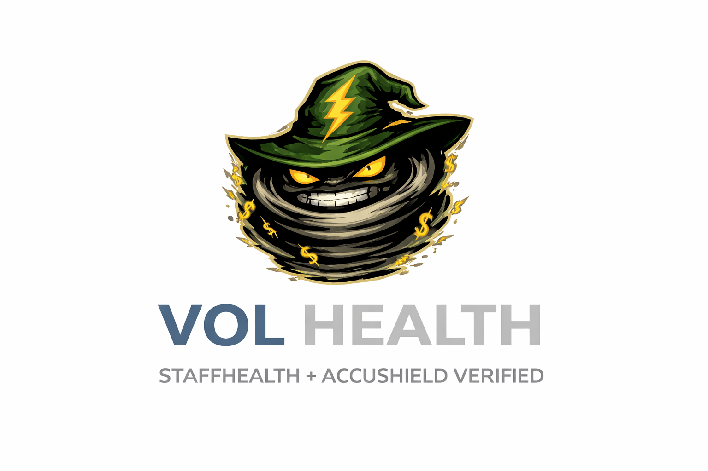

VOL Health™ gives senior living operators a directional way to see where staffing volatility is stressing operations today and how stable their workforce pipeline really is — through a Volatility Index and a Workforce Stability Index (WSI).
Use VOL Health as a single framework, then pick the lens that fits the conversation: volatility today, or workforce stability over time.
Directional diagnostic that scores volatility across census, OT, PBJ exposure, survey risk, reimbursement, reputation, and leadership bandwidth.
Companion diagnostic focused on workforce pipeline health and operational stability.